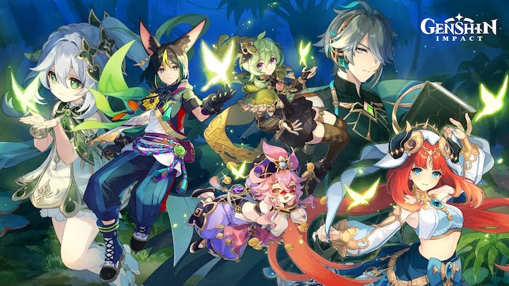
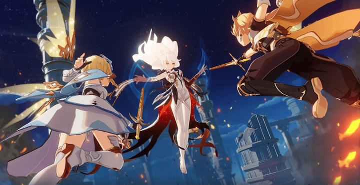

Genshin Impact: An Extremely Brief Guide
Official Version 3.0 Image for Google Play. Characters (from left to right): Nahida (Kusanali), Tighnari, Collei (top), Dori (bottom) Al haitham, and Nilou.
Genshin Impact is a game created by Hoyoverse (originally Mihoyo) in late 2020. The story focuses on two travelers that are separated after fighting an unknown god. Depending on who you choose to play with, you embark on a journey within the world of Tevyat, hopefully to find your lost sibling. On your quest, you meet your new flying traveling companion, Paimon! You then engage with a wide variety of characters, enemies, societal conflicts, and explore what new lands the game has to offer.
The Travelers
Both travlers fighting the unknown god. Left: Lumine. Right: Aether.
What else?
At the top of this page, are buttons you can navigate to learn additional information about this game. Note: this game is a story, combat, and exploration game that builds on updates so the game isn't "done" yet. But you can still enjoy the current aspects that the game has to offer. You can also play with friends, engage in seasonal events, set your own nickname, and much more. I hope you have fun reading my "extremely" brief rundown on this game and my slight review of the aspects I like!